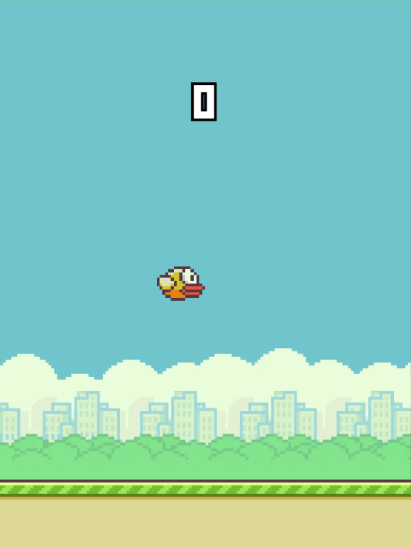

Flappy Bird is a mobile game for Android and iOS release in 2013, developed by Dong Nguyen, under his game development company DotGears.The game was released in May 2013 but received a sudden spike in popularity in early 2014, becoming a sleeper hit. As of 2014, the game was taken down by its developer, but online remakes of the game have been made since.
Flappy Bird was created and developed by Dong Nguyen in two to three days. The bird character, Faby, was originally designed in 2012 for a cancelled platform game.
The gameplay was inspired by the act of bouncing a ping pong ball against a paddle for as long as possible. Initially the game was significantly easier than it became in the final version, but Nguyen said he found this version to be boring and subsequently tightened up the difficulty. He described the business plan of a free download with in-game advertisements as "very common in the Japanese market".
The game was released in May 2013 but received a sudden spike in popularity in early 2014, becoming a sleeper hit. Flappy Bird received poor reviews from some critics, who criticized its high level of difficulty and alleged plagiarism in graphics and game mechanics, while other reviewers found it addictive. At the end of January 2014, it was the most downloaded free game in the App Store for iOS. During this period, its developer said that Flappy Bird was earning $50,000 a day from in-app advertisements as well as sales.
In this game, the player controls the bird Faby which moves to the right persistently, each tap makes the bird jump up a certain amount. The goal of the player is to get through the scrolling pairs of pipes by flying through the gaps placed at random heights, all without touching them and losing.
On February 8, 2014, Nguyen announced on Twitter that the game would be removed from both Apple's App Store and Google Play, writing: "I am sorry Flappy Bird users, 22 hours from now, I will take Flappy Bird down. I cannot take this anymore." He went on to say that taking down the game had "nothing to do with legal issues". The game was removed from both the App Store and Google Play exactly on time, much to the dismay of many fans.
In an interview with Forbes, Nguyen cited the game's addictive nature for its cancellation, stating: "Flappy Bird was designed to play in a few minutes when you are relaxed. But it happened to become an addictive product. I think it has become a problem. To solve that problem, it's best to take down Flappy Bird. It's gone forever." Nguyen said that the guilt that he felt over the game was affecting his sleep and that his conscience was relieved after he took down the game.
I am sorry 'Flappy Bird' users, 22 hours from now, I will take 'Flappy Bird' down. I cannot take this anymore.
— Dong Nguyen (@dongatory) February 8, 2014
Hello! I am John David Constantino, the developer of this website!
Information Source: Flappy Bird Wikipedia